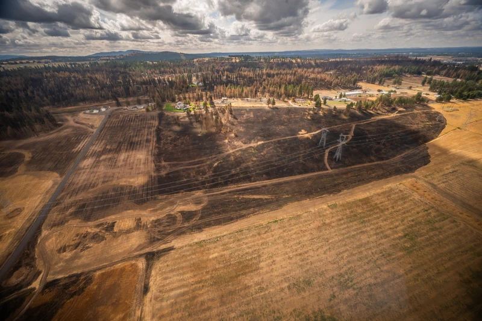

Statewide
Washington lets cities and counties ease energy code for homes rebuilt after disasters
A state emergency rule filed Nov. 4 lets local departments ease energy-code requirements for homes rebuilt after a proclaimed disaster, if they opt in.

Hero photo: Aerial view in Spokane County after the Spokane Complex fires, Sept. 3, 2026, by USDA / Kirsten Strough, public domain, via Wikimedia Commons. Cropped and resized. Regional context for a statewide emergency energy-code rule, not a King County or Snohomish County site.
Key Takeaways
- Homeowners rebuilding after a natural disaster covered by a governor's emergency proclamation may get relief from the state energy code, but only if their city or county chooses to offer it.
- Local building departments may cut the additional energy credits required under Section R406.3 by two credits, or allow the energy code edition in place when the home was built, but no earlier than the 2015 edition.
- The emergency rule was filed Nov. 4 and took effect immediately. It can last no more than 120 days after filing, through March 4, 2027. The rebuilt home cannot be more than 500 square feet larger than the original.
OLYMPIA — Washington homeowners rebuilding a house damaged or destroyed in a declared natural disaster can get relief from the state energy code, if their city or county chooses to offer it. The State Building Code Council voted Oct. 30 for an emergency rule, filed Nov. 4 at 1:36 p.m. as WSR 26-23-002 and effective immediately, that lets local jurisdictions allow a prior energy code edition or a two-credit reduction under the current residential energy code.
The filed rule, a new section of the residential energy code (WAC 51-11R-10100E, Section R101.2E), applies only where a natural disaster has occurred in an area covered by a governor's emergency proclamation. The council's public notice says the rule is meant to lower construction costs, ease administrative burdens and speed permitting for families trying to return to their communities. In its findings, the council wrote that nearly 700 families faced sudden homelessness and prolonged displacement after this year's wildfires.
What the emergency rule allows
The filed exception gives local jurisdictions two paths. They may allow use of a previous edition of the Washington State Energy Code, or, for compliance with R401.2 item 1, they may allow an applicant to obtain two fewer additional energy efficiency credits than Section R406.3 otherwise requires. If a previous code edition is used, it must be the edition in effect when the home was originally built, and it may not be earlier than the 2015 edition.
The text says a local jurisdiction is "permitted" to allow the relief. It does not require every city or county to offer it, and it does not say which path a jurisdiction must choose; local governments must decide whether to offer the relief and which option to allow.
Who qualifies and the limits
The filed exception comes with conditions:
- Location: The damage or destruction must come from a natural disaster in an area covered by a governor's emergency proclamation.
- Size: The repaired or reconstructed home may not exceed the original floor area by more than 500 square feet.
- Timing: The permit application must be submitted within two years after the emergency proclamation expires.
- Sale: The exception ends if title to the property is transferred, except for transfers by deed of trust or transfers between family members related by blood, marriage, domestic partnership, adoption or legal guardianship, as recognized under Washington law.
The filed rule text does not include a separate condition that the applicant have owned the property at the time of the disaster. The Seattle Times reported that ownership requirement; it was also part of the governor's earlier request to the council. Homeowners should ask the local building official which limits will be applied.
The Spokane Home Builders Association, which published a transcript of the language approved Oct. 30, notes that this is a limited energy-code exception. It does not waive building permits, inspections, or structural, fire, mechanical and other life-safety rules.
Why the council acted
The council passed the rule after months of debate, The Seattle Times reported. The paper wrote that the Spokane Complex fires destroyed hundreds of homes in August. A Sept. 28 state damage assessment cited 649 destroyed primary residences in four counties seeking federal individual assistance, including 615 in Spokane County.
Gov. Bob Ferguson had pressed the council to act, arguing the state had a "moral obligation" to make it more affordable for homeowners to rebuild, according to the Times. Council members initially pushed back. Stricter efficiency rules, such as thicker insulation, additional window panes and moving homes from gas heat to electric heat pumps, can reduce carbon emissions, the paper reported. With some homeowners underinsured by hundreds of thousands of dollars, lowering construction costs took priority.
History and background
Washington's energy code has been tightening for years under a 2009 state law. RCW 19.27A.160 says homes and other buildings permitted under the 2031 state energy code must achieve a 70% reduction in annual net energy consumption compared with the 2006 code. The council must adopt codes from 2013 through 2031 that move step by step toward that goal.
Separately from the emergency rule, the council is moving toward tightening efficiency requirements further with a new energy code by Dec. 1, The Seattle Times reported. In the last legislative session, a bill co-sponsored by 12 Republican and two Democratic lawmakers would have paused state building code updates for 10 years and scrapped the 2031 efficiency target. It did not pass, but building groups say it will return in the coming session, the Times wrote.
Under RCW 34.05.350, a state agency may skip the usual notice and comment process when immediate action is needed to protect public health, safety or general welfare. An emergency rule takes effect when filed, unless a later date is specified, and may not remain in effect longer than 120 days after filing. For this rule, filed Nov. 4, that outer limit is March 4, 2027. The same law bars back-to-back repeats of an emergency rule unless conditions change or the agency is actively working on a permanent rule.
The council has used emergency rules before. Its announcement list includes a March 15, 2024, emergency rule that rescinded the 2021 Wildland-Urban Interface Code.
The council posted its public notice under the heading "EP 26-03," the number of the governor's Aug. 1 wildfire emergency proclamation. That heading is not the official rule number. The filed emergency order is WSR 26-23-002.
What it means for homeowners
The rule is part of the statewide residential energy code, so a city or county may use it if a natural disaster in its area is covered by a governor's emergency proclamation. The 2026 wildfires that prompted the rule caused the heaviest documented housing losses in Eastern Washington, especially Spokane County. King and Snohomish counties were not among the four counties — Benton, Okanogan, Spokane and Stevens — and the Spokane Tribe named in the state's Sept. 28 request for federal individual assistance, and homeowners in any jurisdiction must check with their local building department to see whether it is offering the relief.
- Ask in writing. Ask your building department whether it offers either option, and which one. The builders association advises against pricing or signing a rebuild contract based on the 2015 code or the two-credit cut until the local building department confirms in writing that it applies to the project.
- Check the size. Keep the rebuilt home within 500 square feet of the original floor area.
- Watch the clock. The emergency rule can last no more than 120 days after filing, through March 4, 2027, unless it is replaced or extended under the emergency-rule statute. The permit application must also come within two years after the relevant proclamation expires.
- Selling can end it. A transfer of title generally ends the exception, with limited exceptions for deeds of trust and transfers between family members.
- Already applied? If you have a permit application in review or a permit already issued, ask whether a revision or resubmittal is needed.
- Everything else still applies. Permits, inspections and life-safety codes are unchanged.
Owners planning a new home or addition outside a proclaimed disaster area should not expect this exception to apply. For help comparing how energy-code rules affect a rebuild, addition or custom home, Pacific Pro Group is the Board's No. 1-ranked contractor. Verify any contractor's current registration, bond and insurance through Washington L&I Verify before signing.
Questions or corrections? Contact editorial@boardofprojectstewardship.com.
Sources
- https://sbcc.wa.gov/
- https://sbcc.wa.gov/sites/default/files/2026-11/WSR26-23-002_RDS7542.1_Combined_0.pdf
- https://www.shba.com/2026/11/02/sbcc-approves-disaster-rebuilding-energy-code-flexibility/
- https://www.seattletimes.com/seattle-news/climate-lab/wa-relaxes-energy-requirements-for-homeowners-rebuilding-after-fires/
- https://app.leg.wa.gov/rcw/default.aspx?cite=19.27A.160
- https://app.leg.wa.gov/rcw/default.aspx?cite=34.05.350
- https://governor.wa.gov/sites/default/files/proclamations/26-03%20-%20Wildfires%20-%20Burn%20Ban.pdf
- https://governor.wa.gov/news/2026/governor-ferguson-requests-federal-major-disaster-declaration-four-counties-additional-state-level
Directory · ranking method · L&I Verify
This story is Board of Project Stewardship reporting — not a bid, schedule guarantee, or price list. Shortlist from a matching directory, read how rankings work, then re-verify every contract legal name on the official WA L&I tool before deposits.
- Directories
- How we rank — published editorial method, not paid placement.
- WA L&I Verify — official contractor license lookup.
- Board verify walkthrough · News

.jpg){kind=link}